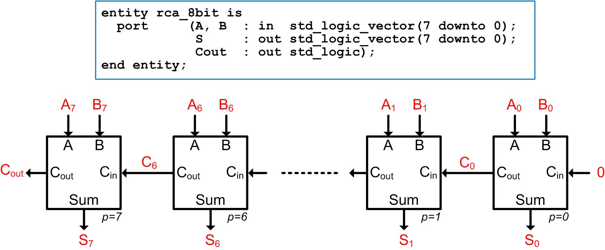

HW 12.1
____________________________________________________________________________
12.1.5
Design a VHDL model for an 8-bit Ripple Carry Adder (RCA) using a structural design approach. You will first create a half adder (half_adder.vhd) using concurrent signal assignments and logical operators. You will then create a full adder (full_adder.vhd) that consists of two half adder components and an OR gate. Finally, you create your top level adder (rca.vhd) by instantiating eight full adder components. You are going to model the ripple delay by inserting 1ns of gate delay for the XOR, AND, and OR operators using a delayed signal assignment. The general topology and entity definition for your design are shown below.
You will need to create a test bench to verify your model by driving in a variety of values for A and B and checking that the sum and carry out of your RCA are correct. You should drive in different values every 30ns in order to give sufficient time for the signals to ripple through your adder. Use two nested for loops to create your test vectors.

Deliverables: You are going to design and simulate your adder using ModelSim. You will upload all of your design files (rca_8bit.vhd, half_adder.vhd, full_adder.vhd), your test bench (rca_8bit_TB.vhd), and your simulation waveform (waveform_12_1_5.jpg) to the DropBox.